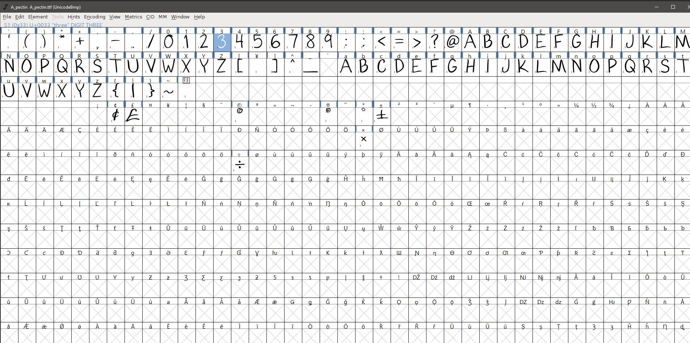

Creating a Personal Font
I decided it would be fun to create my own font using the .ttf file type because I thought it would be good practice for navigating unique file types. The best platform for creating .ttf files is Font Forge, which is a program that I was unfamiliar with and didn’t have a very friendly UI, luckily with a few online tutorials I was able to figure it out.
Font Forge
Font forge gives you an overview of Unicode values and their assigned files. Fonts are typically made with .svg files to prevent pixelated text and minimize file size. I created the SVG files in a separate program and uploaded the folder to Font Forge.
Exporting
Within Fontforge I could modify the text's default settings, namely things like spacing and default size before exporting them, once I had configured that, I had to validate the text and troubleshoot it to ensure it works properly. The majority of troubleshooting is just modifying the SVG files to remove non-integral coordinates and solve self-intersection errors.
End Result
Overall the process was a bit monotonous, but it was all worth it when I got to see how my own font displayed:
The quick brown fox jumps over the lazy dog.
Sphinx of black quartz, judge my vow.